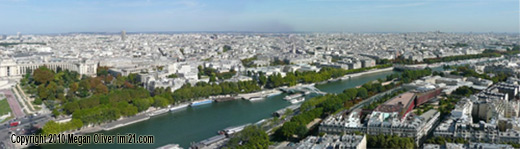
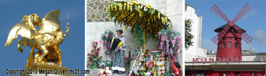

The river Seine divides the city into the River Gauche on the south and the Rive Droite on the north banks of the river. The river is still very busy with commercial barges transporting cargo in and out, there is also much
The historical name for the city is Parisii by the Gauls, however the Romans arrived in 52 B.C. and changed the name to Lutetia

Views of Paris and the river Seine

More information and photos about Paris A to Z : city of colour, life and romance